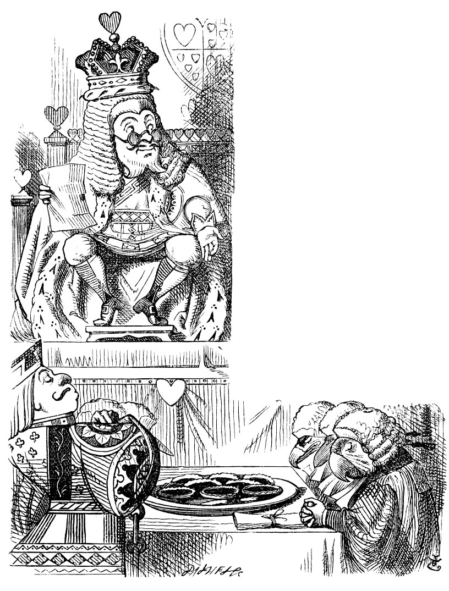

We can use R to create complicated diagrams too ! Flow charts, Gantt charts, Org charts…all with R. We will use packages such as nomnoml and DiagrammeR, also try the language D2 https://d2lang.com to achieve these ends. There is also an R package called bpmnR that allows to create Business Process Model Diagrams https://www.bpmn.org
library(tidyverse)## ── Attaching core tidyverse packages ──────────────────────── tidyverse 2.0.0 ──
## ✔ dplyr 1.1.4 ✔ readr 2.1.5
## ✔ forcats 1.0.0 ✔ stringr 1.5.1
## ✔ ggplot2 3.5.1 ✔ tibble 3.2.1
## ✔ lubridate 1.9.3 ✔ tidyr 1.3.1
## ✔ purrr 1.0.2
## ── Conflicts ────────────────────────────────────────── tidyverse_conflicts() ──
## ✖ dplyr::filter() masks stats::filter()
## ✖ dplyr::lag() masks stats::lag()
## ℹ Use the conflicted package (<http://conflicted.r-lib.org/>) to force all conflicts to become errorslibrary(DiagrammeR)
library(nomnoml)
library(bpmnR)A list of Text-to-Diagram tools! https://xosh.org/text-to-diagram/